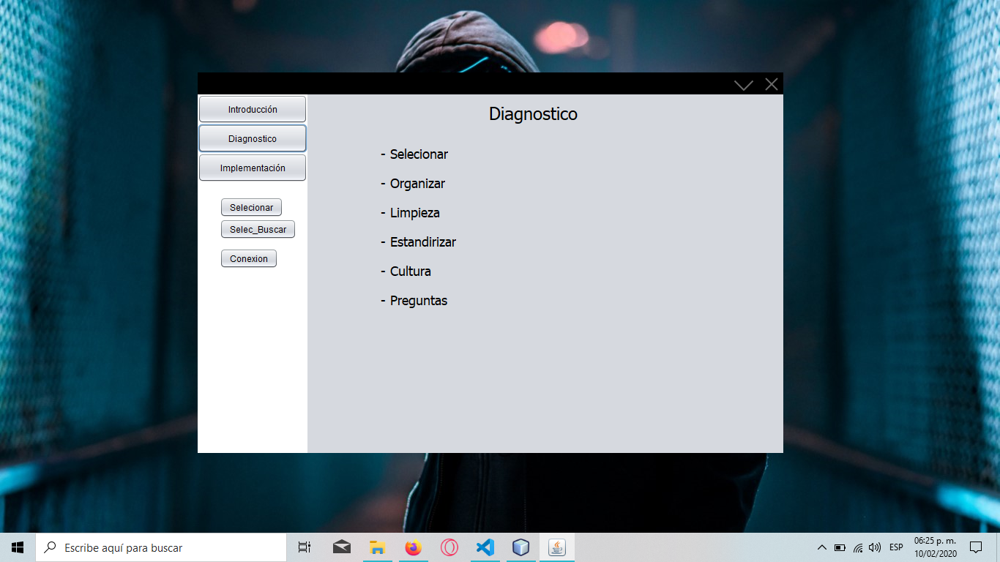

Proyectos Tecnologicos |
|
|
Proyecto de software para una constructora 
Descripcion:En este proyecto se realizo con el fin de porder entregar un software a una empresa en la cual nos pidio hacer un formulario donde se pudieran los datos de las herramientas Proyecto de una plataforma identificadora de podologia (curva y linea)Descripcion:En este proyecto se creo un documento en el cual se propone un proyecto inovador en el cual contribuya a la sociedad en algo positivo. Proyecto de instalacion y funcionamiento de sensoresDescripcion:En estes proyecto se realizo la instalacion de sensores en una escala de una empresa en la cual se instalaron sensores como sensor del agua para ver cuando esta lloviendo, sensor de aproximidad que se utilizo para ver cuando hay una persona cerca de la puerta, entre otros sensores. |


|